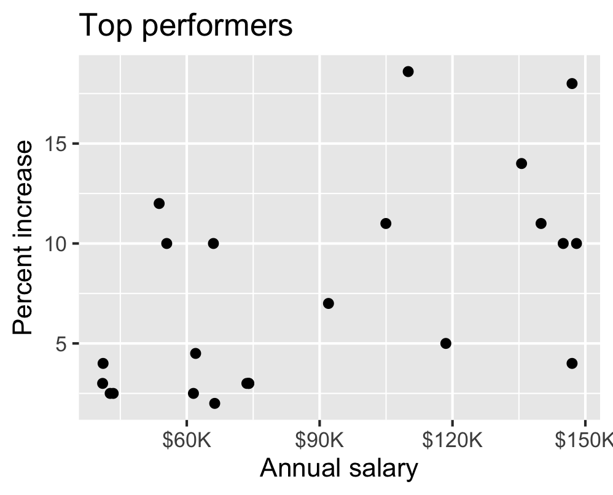
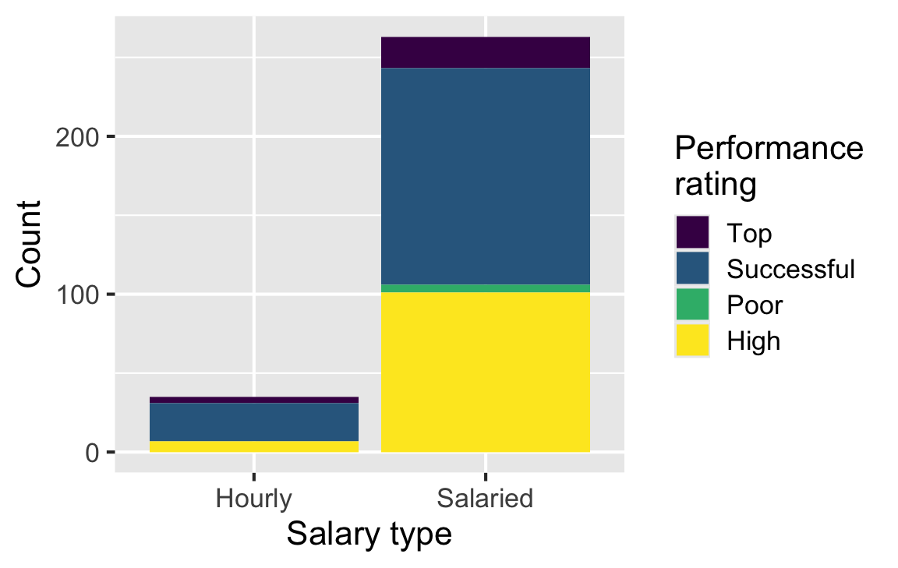

Exam 1 Review
Lecture 12
Prof. Mine Çetinkaya-Rundel
Duke University
STA 199 - Fall 2026
September 30, 2026
Warm-up
While you wait: Participate 📱💻
Check your email (and your spam folder) for an email from TEAMMATES
Fill out your peer evaluation for your team members
If you fail to submit your feedback, you’re not eligible to receive the points they give you.
From last time
Go to your ae project in Positron.
If you haven’t yet done so, make sure all of your changes up to this point are committed and pushed, i.e., there’s nothing left in your source control pane.
If you haven’t yet done so, pull to get today’s application exercise file:
ae-07-chronicle-scrape-I.qmd.Work through the application exercise in class, and render, commit, and push your edits by the end of class.
Exam 1 review
Exam 1
Exam 1 is on Wednesday, starts promptly at 1:25 pm!
Covers all material up to and including today’s lecture
Sample exam + model solutions for select HW questions are posted
Exam will be in class, closed book, no calculators, no computers, just 1 notes sheet
Notes sheet: 8.5x11, both sides, hand written or typed, any content you want, must be prepared by you
We’ll direct you to your seat so get here early to allow time to get settled and read the instructions
Types of questions
- Multiple-choice:
- Some will be single best answer, no partial credit
- Some will be at least one correct answer, with partial credit, and clearly identified with “Select all that apply”
- Open-ended:
- Short answer, show your work, justify your reasoning
- With partial credit
Q1: Variable types
blizzard_salary has 409 rows and 4 columns. Each row is a worker who completed the spreadsheet. Which statements are correct? Select all that apply.
- The dataset has 399 rows.
- The dataset has 4 columns. Correct
- Each row represents a Blizzard Entertainment worker who filled out the spreadsheet. Correct
percent_incris numerical and discrete.salary_typeis numerical.annual_salaryis numerical. Correctperformance_ratingis categorical and ordinal. Correct
Q9: Where did the observations go? — question
A friend notices that the total number of observations in this plot seems lower than the total in blizzard_salary (409 workers). What might be going on here? Explain your reasoning.

Observations with missing values for both variables won’t be represented on the plot.
Q13: Reviewing an interpretation — question
For Top performers, a team writes: “The relationship is positive, having a higher salary results in a higher percent increase. There is one clear outlier.” Which peer review notes are accurate and helpful? Select all that apply.
- The interpretation is complete and perfect.
- It doesn’t mention the direction.
- It doesn’t mention the form, which is linear. Correct.
- It doesn’t mention the strength, which is somewhat strong. Correct.
- There isn’t a clear outlier; identify any potential outlier by its salary and/or percent increase. Correct.
- The interpretation is causal; observational data do not establish which variable causes the other or rule out other explanations. Correct.
Q16: Which bar plot?
Which plot is produced by this code? Correct: D.

Q17: Reading a tibble
Based on this output, which statements must be true? Select all that apply.
# A tibble: 336,776 × 19
year month day arr_delay carrier dep_time sched_dep_time
<int> <int> <int> <dbl> <chr> <int> <int>
1 2013 1 1 11 UA 517 515
2 2013 1 1 20 UA 533 529
3 2013 1 1 33 AA 542 540
4 2013 1 1 -18 B6 544 545
5 2013 1 1 -25 DL 554 600
6 2013 1 1 12 UA 554 558
7 2013 1 1 19 B6 555 600
8 2013 1 1 -14 EV 557 600
9 2013 1 1 -8 B6 557 600
10 2013 1 1 8 AA 558 600
# ℹ 336,766 more rows
# ℹ 12 more variables: dep_delay <dbl>, arr_time <int>,
# sched_arr_time <int>, flight <int>, tailnum <chr>,
# origin <chr>, dest <chr>, air_time <dbl>, distance <dbl>,
# hour <dbl>, minute <dbl>, time_hour <dttm>flightsis a tibble. Correct.flightshas 10 rows.flightshas 8 columns.carrieris a character variable. Correct.- There are no missing data in
flights.
Q27: Summing a condition
Which statements about the code and its result are true? Select all that apply.
# A tibble: 1 × 1
`sum(release_country == "United States")`
<int>
1 435- It evaluates whether each
release_countryequals"United States", resulting in logical values. Correct. - It filters out rows where
release_countryis not"United States"and counts the remaining rows. - It sums the logical values, treating each
TRUEas 1 and eachFALSEas 0. Correct. - It results in a character vector.
- The result shows 435 movies released in the United States. Correct.
Q29: A 6 × 6 result
# A tibble: 6 × 6
rating Other Drama Action Comedy Horror
<fct> <int> <int> <int> <int> <int>
1 G 5 1 1 1 0
2 PG 38 13 10 18 0
3 PG-13 19 25 35 35 0
4 R 45 50 57 96 21
5 NC-17 1 2 0 1 0
6 Not Rated 4 11 4 6 1Which statements are true? Select all that apply.
- The code counts movies in each rating and genre combination. Correct.
- The code sorts the results in descending order.
- Each row of the output is a movie.
- The output shows six distinct ratings in the dataset. Correct.
- The code reduces the number of variables and observations in the
moviesdata frame to six.
Q31: Reshaping inflation data — question
country_inflation has 38 rows and 34 columns: one row per country, a country column, and annual inflation columns for 1993–2025.
How many rows and columns does the result have? Show where each number comes from. What does each row represent, what did pivot_longer() do, and what does names_transform = as.numeric accomplish?
Q31: Reshaping inflation data — answer
Rows: 1,254. Columns: 3. Each row represents one country in one year.
- 38 is the number of countries (the original rows).
- 34 − 1 = 33 columns are year columns: exclude the one
countrycolumn. Equivalently, 2025 − 1993 + 1 = 33 years. - Each country becomes 33 rows, so the total is:
\[38 \times 33 = 38 \times 30 + 38 \times 3 = 1{,}140 + 114 = 1{,}254\]
The output columns are country + year + inflation_rate = 3:
countryis retained and repeated for each year.- The 33 old column names become values in
year. - Their cell values become values in
inflation_rate.
Missing inflation values still get rows; this code does not drop them.
Q32: Ratios and the top five — question
country_inflation |>
filter(!is.na(`1993`), !is.na(`2025`)) |>
mutate(inf_ratio = `2025` / `1993`) |>
select(country, inf_ratio) |>
arrange(desc(inf_ratio)) |>
slice_head(n = 5)# A tibble: 5 × 2
country inf_ratio
<chr> <dbl>
1 New Zealand 2.20
2 Australia 1.64
3 Denmark 1.51
4 Ireland 1.50
5 United Kingdom 1.48Part 1: What does the resulting data frame represent? What does New Zealand’s inf_ratio of 2.20 mean?
Part 2: What would change if the filter() step were removed? Why could that be misleading?
Q32: Ratios and the top five — answer
Part 1: These are the five countries with the largest 2025-to-1993 inflation ratios, in descending order.
- A ratio of 2.20 means New Zealand’s 2025 inflation rate was 2.20 times its 1993 rate (120% higher). It does not mean the 2025 inflation rate was 2.20%.
arrange(desc(inf_ratio))puts the largest ratios first.slice_head(n = 5)keeps the first five rows in that order.
Part 2: Without filter(), six countries would have NA ratios because at least one of their two rates is missing.
arrange()puts theseNAs last. For these data, the same five countries would still be returned.- The top-five table cannot reveal whether an absent country has a smaller ratio or lacks data. Filtering makes the exclusion explicit; report that the ranking uses 32 of 38 countries.
Q32: What exactly does slice_head() do?
It selects rows by their current positions. It does not sort or calculate a summary.
| Stage | Rows | What happened? |
|---|---|---|
| Start | 38 | One row per country |
filter(...) |
32 | Keep countries with both endpoint rates |
mutate(...) |
32 | Add one ratio to each row |
select(...) |
32 | Keep two columns |
arrange(desc(inf_ratio)) |
32 | Put largest ratios first |
slice_head(n = 5) |
5 | Keep rows 1–5 |
Removing only slice_head(n = 5) keeps all 32 eligible countries. It does not restore the six countries excluded by filter().